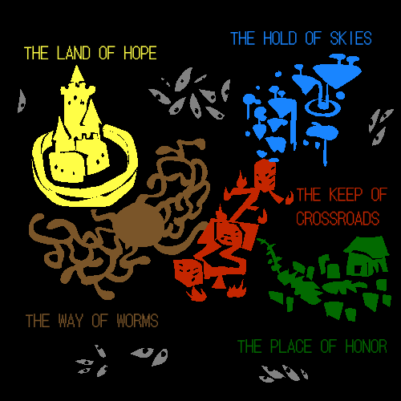

WELCOME to YOUR HEROES NASCENCE! You begin your journey to save the lands of PANCENT from the enroaching CORROSION, a twisted malice that has divided all the lands. You awake in THE LAND OF HOPE, a prospering but claustrophobic kingdom that has sealed itself off from the rest of the world. A great river and wall encircles THE LAND OF HOPE, but on the cusp of this edge lies an entrance to THE WAY OF WORMS, an underground collection of tunnels that snake through the world. Though maze-like, a bridge above the deepest trench will take adventurers to THE KEEP OF CROSSROADS, a smoldering ruin struggling to rebuild. Through the KEEP OF CROSSROADS one can reach THE HOLD OF SKIES, a collection of floating lakes and islands torn up from the ground in order to escape the CORROSION. Recently, charred ashes in THE KEEP OF CROSSROADS have given way to a new path, one fraught with death as it leads to THE PLACE OF HONOR, a cursed civilization turned cemetary.
SET FORTH, DEAR HERO! UNITE with your allies, STRIVE against the darkness, and RELEASE the lands from doom!
